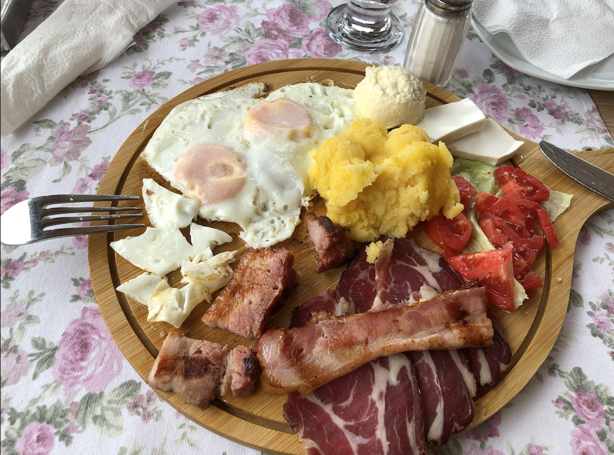
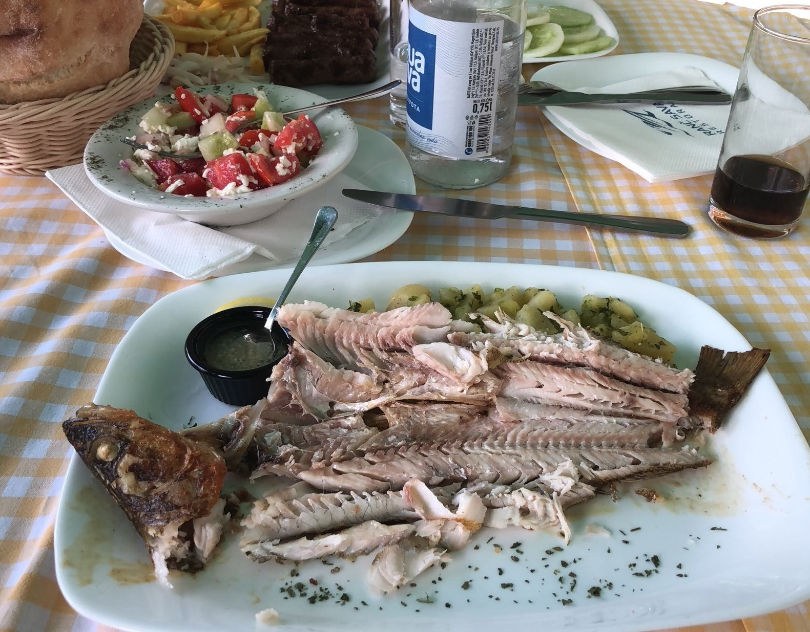
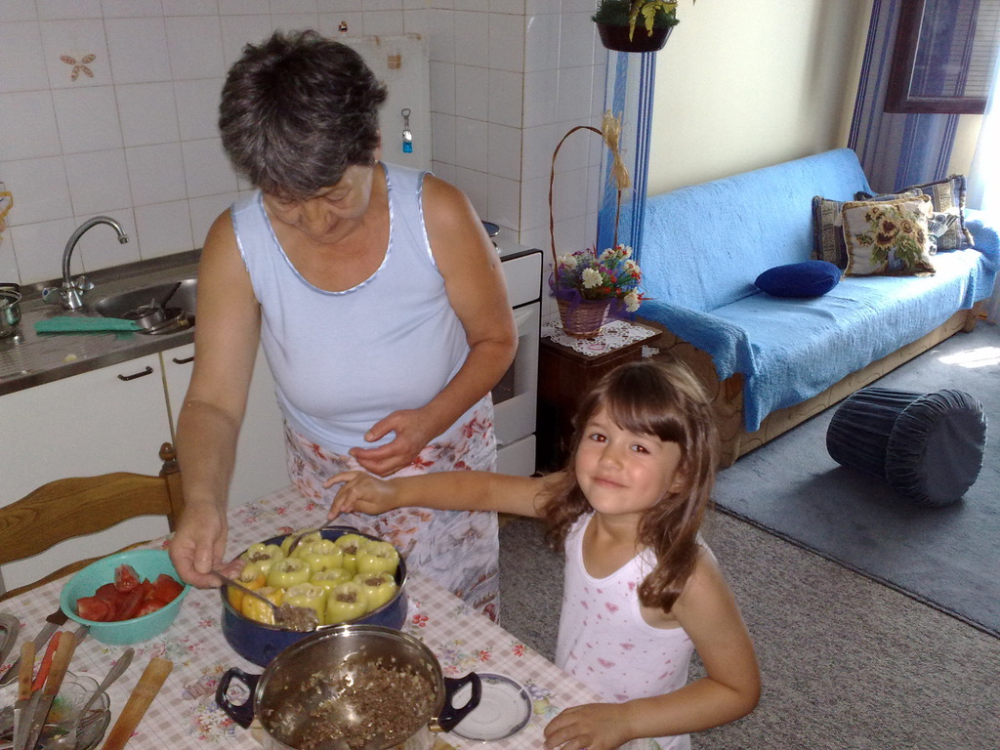
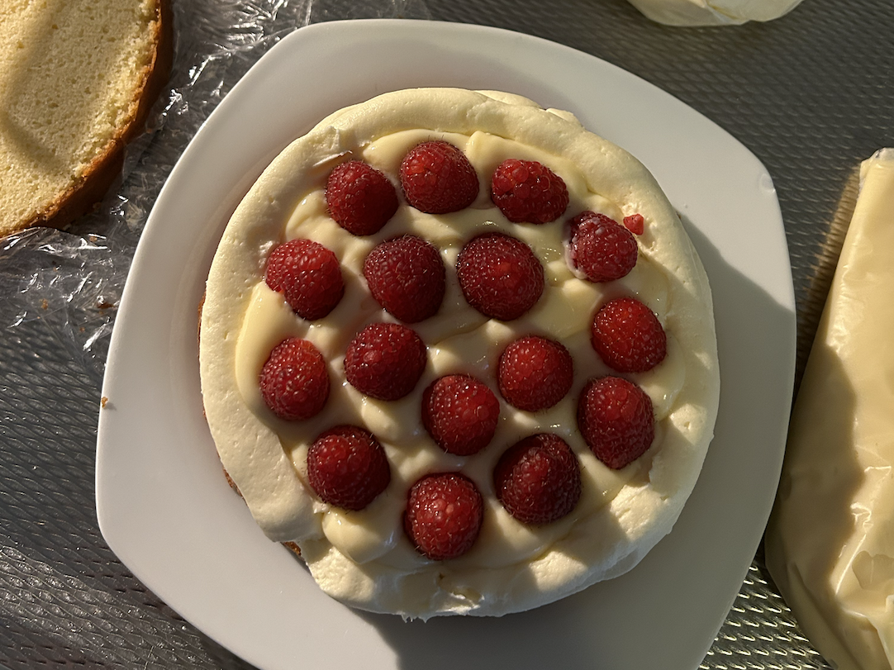
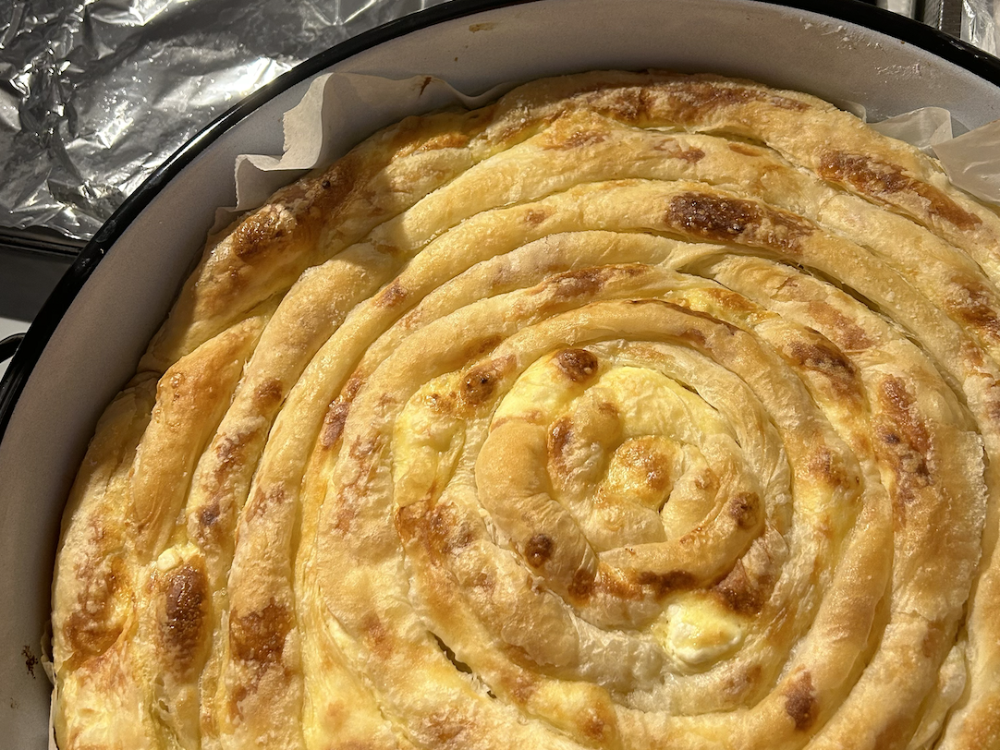
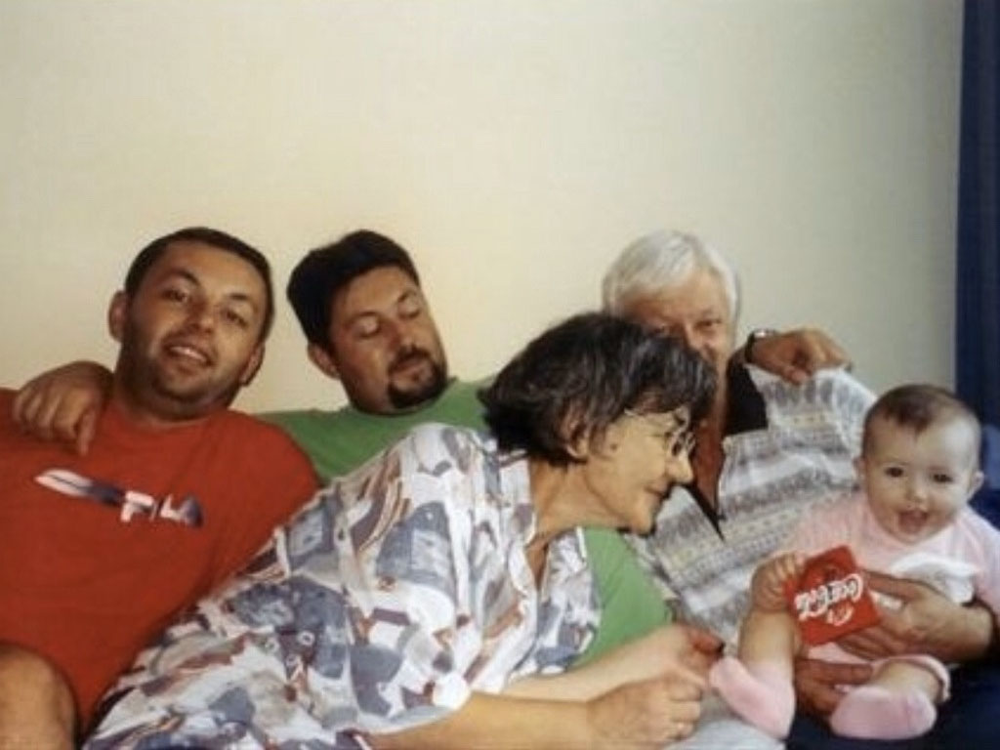
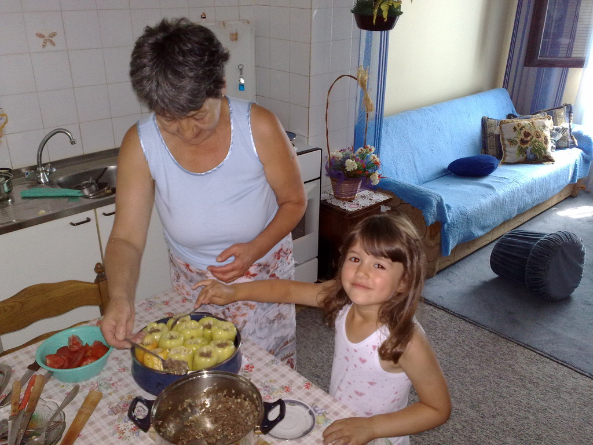
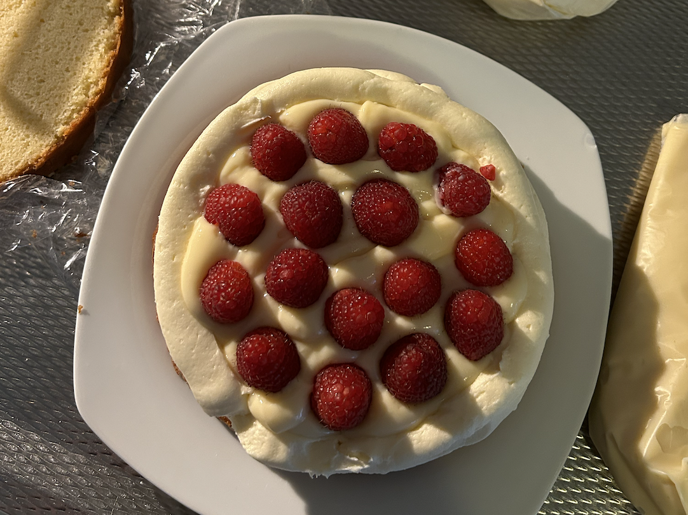
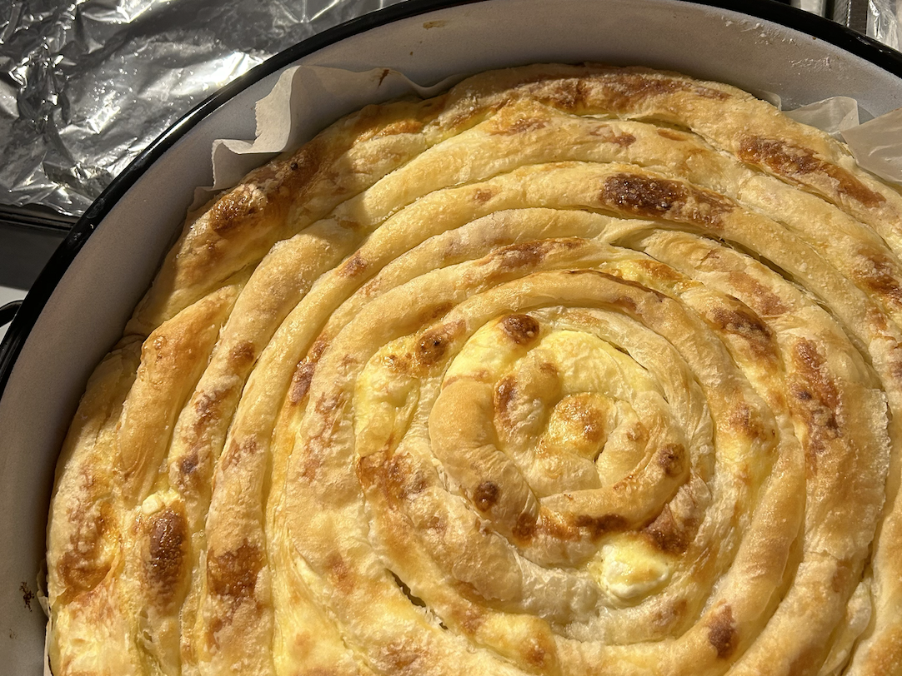
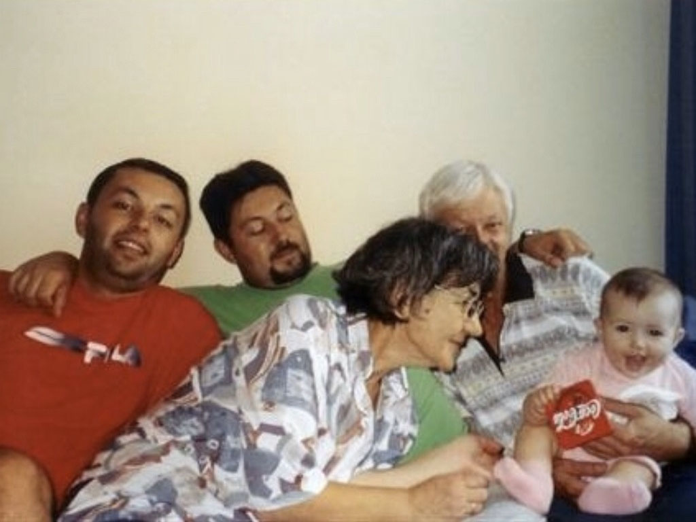

Wie ben ik?
Hi! Ik ben Katarina Živanović, 19 jaar en derdejaars student Communication & Multimedia Design bij de HvA. Ik ben altijd al creatief geweest. Als kind kon ik uren bezig zijn met tekenen en knutselen. Ik vind het geweldig om ideeën die in mij opkomen om te zetten in iets creatiefs.
Ik hou ook heel erg van eten en daarom vind ik het heerlijk om te koken en te bakken.
Favoriete gerechten

gulaš
- 
ontbijt
- 
pastrmka
Mijn inspiratie
Van jongs af aan ben ik al te vinden in de keuken, samen met mijn oma. Het was altijd een feest om haar te assisteren bij het bereiden van heerlijke maaltijden. Mijn liefde voor koken en bakken is hierdoor ontstaan en heeft zich door de jaren heen verder ontwikkeld. Het is een passie geworden die ik koester en graag deel met anderen.
De warme herinneringen aan mijn jeugd, waarin ik zij aan zij met mijn oma stond, hebben mijn kookavonturen verrijkt. Haar keukengeheimen, overgedragen van generatie op generatie, zijn voor mij als kostbare schatten die ik in ere houd. Het is niet alleen het bereiden van maaltijden, maar ook het doorgeven van tradities en het bewaren van familiegeschiedenis.
 






